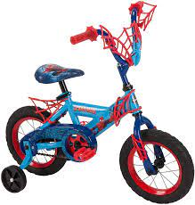
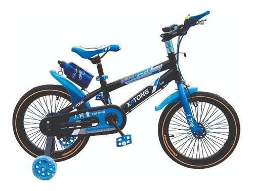
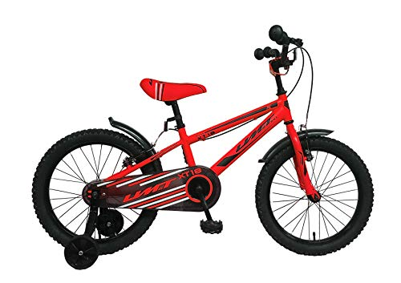

| RODADA | ESPECIFICACIONES | PRECIO | VISTA |
| 12 | Bicicleta rodada 12 pulgadas, color azul y roja, llantas color negra, ruedas laterales incluidas,barbitas incluidas color azul roja. | $1200 |  |
| 16 | Bicicleta rodada 16 pulgadas, color gris y azul cielo, llantas color negra, ruedas laterales incluidas,barbitas incluidas, puños de goma color azul . | $1600 |  |
| 18 | Bicicleta rodada 18 pulgadas, color roja y negro, llantas color negra, ruedas laterales incluidas,cubre cadenas con diseño rojo y negro, puños de goma color negro . | 1800 |  |